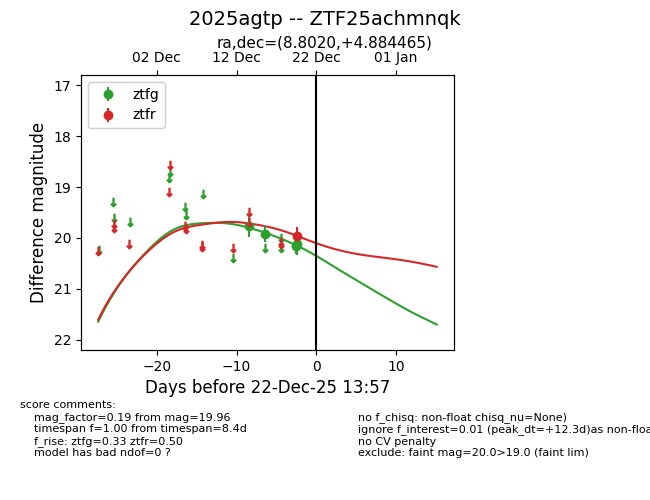
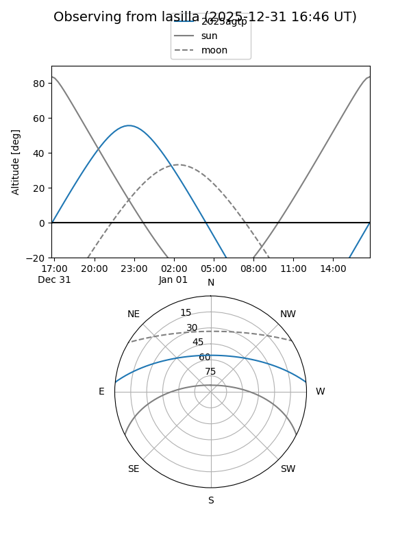
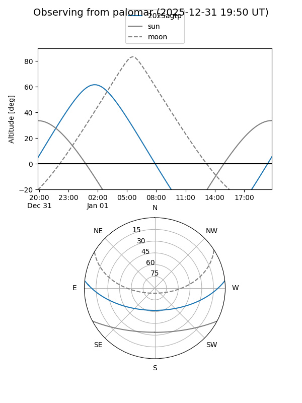

2025agtp
Target 2025agtp at 2026-01-09 12:49
Aliases and brokers:
FINK: link
Lasair: link
ALeRCE: link
TNS: link
YSE: link
alt names
ZTF25achmnqk (ztf,fink_ztf)
2025agtp (tns,yse)
Coordinates:
equatorial (ra, dec) = 8.8020,+4.88446
equatorial (HMS+DMS) = 00:35:12.47,+04:53:04.07
galactic (l, b) = (115.3403,-57.74785)
Flags:
Photometry:
last ztfg=20.12, ztfr=19.96
4 ztfg, 1 ztfr detections
Lightcurve

Visibility


Additional plots